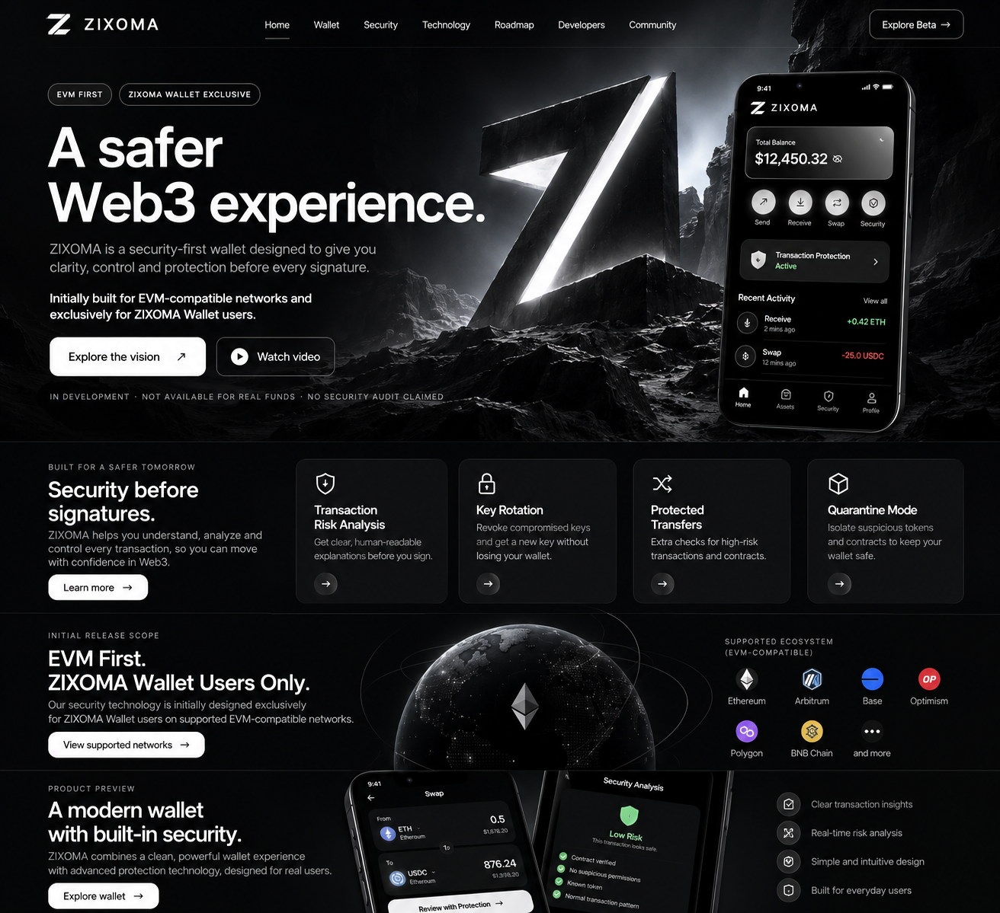

Transaction Risk Analysis
Human-readable explanations before you sign.

ZIXOMA is a security-first wallet designed to give you clarity, control and protection before every signature.
Initially designed for EVM-compatible networks and exclusively for ZIXOMA Wallet users.
Explore the vision ↗IN DEVELOPMENT · NOT AVAILABLE FOR REAL FUNDS · NO SECURITY AUDIT CLAIMED
Planned protection features, shown as product concepts rather than live security guarantees.
Human-readable explanations before you sign.
A planned recovery design for compromised keys.
Additional review for higher-risk actions.
Concept for isolating suspicious assets and contracts.
Our security technology is initially planned exclusively for ZIXOMA Wallet users on selected, tested EVM-compatible networks. Specific supported chains will be announced after validation.
The wallet and risk-analysis screens in the approved design are illustrative mockups. No real funds, live balances, security audits or working features are represented.
Design concept → architecture → prototype → security testing → limited beta. Dates and milestones will be published when confirmed.
Technical documentation and integration details will be shared as the project matures. No public SDK or API is promised for the initial release.
Official community channels will be listed here when verified.
ZIXOMA is in development. Beta access is not yet open, and the product is not ready for real funds.
Back to top ↑